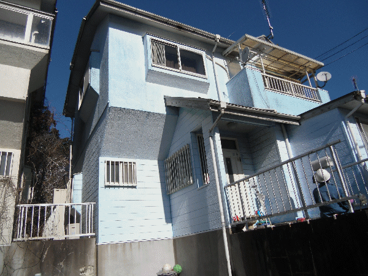
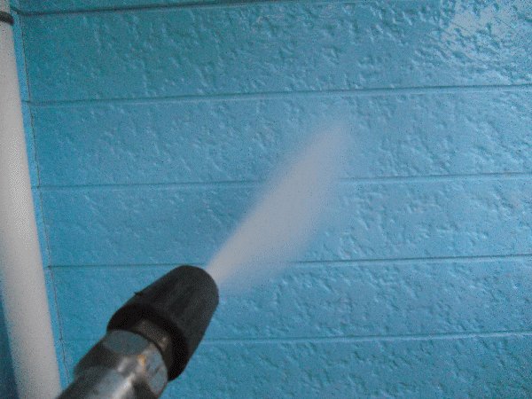
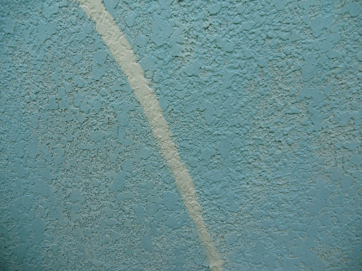
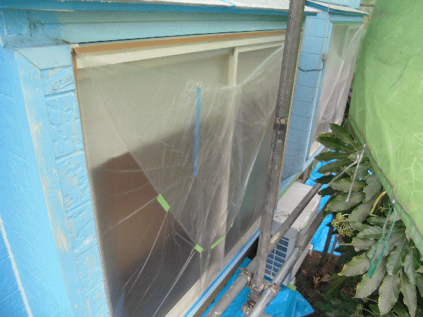
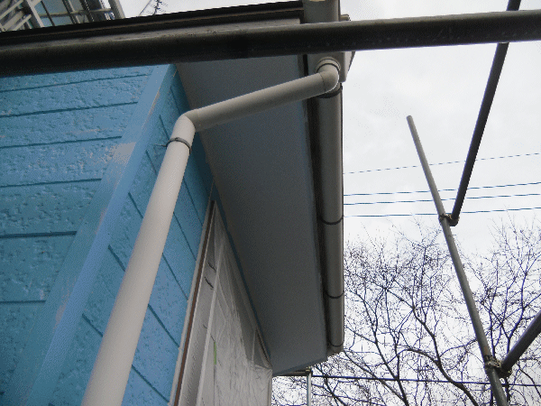
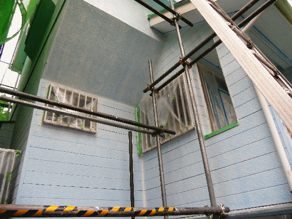
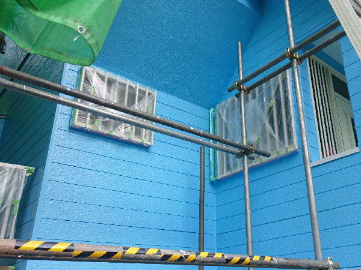
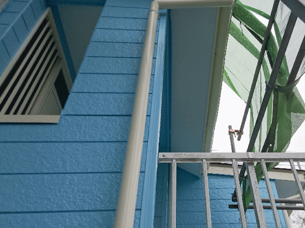
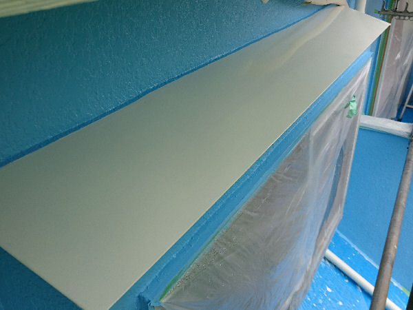

工事前の様子
もともと青色だった外壁ですが、チョーキング現象（壁表面に白い粉状のものが出てくる現象）により、壁の色が白色に近い色になってしまっています。
また、写真ではわからないですが、クラック（割れ）もかなり発生している状態です。

高圧洗浄
足場を仮設して、壁の汚れ・チョーキング等を落とすために高圧洗浄をかけます。

クラック処理、コーキング打ち替え
クラック処理として、変成シリコン（ノンブリード）で割れを塞いでいきます。変成シリコンというコーキング材は普通のコーキング材と違い、上から塗料を塗ることができますので、塗装する際にはこのタイプを使用します。
ノンブリードというのは、通常の変成シリコンを使用しますと、塗装後数年経つとコーキング跡に汚れが付着し、そこだけ色が変わってしまいますが、ノンブリードタイプを使えば、年数が経っても色が変わるということがありませんので、塗装の際にはこのタイプを使用します。
サイディング間のコーキングの劣化も目立ちましたので、撤去した後、同じ材料を使いコーキングの打ち替えも行っています。

養生
窓・玄関等に塗料が付着しないように、養生していきます。
塗料の付着防止はもちろんですが、塗装のラインをきれいに出すためにも重要な作業となります。この養生の出来しだいで、外壁塗装の出来が決まるといっても過言ではありません。

軒天・破風板塗装
軒天・破風板の塗装をしていきます。
使用塗料 軒天：ニッペ ケンエースGⅡ（下塗り不要）／破風板の下塗り：ニッペ 1液ファインウレタンU100木部用下塗／上塗り：ニッペ 1液ファインウレタンU100

外壁下塗り
外壁の下塗りをしていきます。
使用塗料 エスケー化研 水性ソフトサーフSG
この下塗材は、密着性を高めるのはもちろんですが、外壁面の微細なひび割れ等も消し、カバーしてくれるので、非常に便利な塗料です。

外壁中塗り・上塗り
中塗り・上塗りをしていきます。水性なのでにおいもありません。
使用塗料 エスケー化研 水性セラミシリコン

雨樋塗装
雨樋の塗装をしていきます。
使用塗料 ニッペ 1液ファインウレタンU100（2回塗り）

トタン・水切り塗装
トタン部・水切り部の塗装をしていきます。
使用塗料 下塗り：ニッペ 1液ハイポンファインデクロ／上塗り：ニッペ 1液ファインウレタンU100

養生はがし・最終チェック・足場バラシ・工事完了
家がよみがえりました。
このあと、養生をはがして、塗り残し・不備がないか最終チェックします。問題がなければ、足場をバラして、周りの清掃、植木・荷物等の移動をおこないます。これで工事完了となります。